4. 使用基本投影机功能¶
4.1. 打开投影仪¶
打开投影仪后，再打开想要使用的计算机或视频设备。
将电源线连到连接投影机的电源插口，然后将其插入到电源插座。
投影机的电源指示灯会变为蓝色。它指示投影机已通电，但尚未打开（处于待机模式）
按控制面板或遥控器上的电源按钮以打开投影机。
投影机会发出嘟嘟声，投影机暖机时，状态指示灯会闪烁蓝色。一旦投影机暖机完毕，状态指示灯会停止闪烁并变为蓝色。
- 注意：
- 快速启动在在投影机扩扩展设置菜单中启用时，下一次按电源按钮时投影机几秒内即可使用。
操作步骤：扩展设置>操作>快速启动
如果看不到投影图像，请尝试以下操作。
打开连接的计算机或视频设备。
使用便携式电脑时，从电脑中更改屏幕输出。
插入DVD或其他视频介质，然后按播放 （如果必要）。
按控制面板或遥控器上的**[Source Search]**按钮以检查源。
按遥控器上适合所需视频源的按钮。
如果主屏幕显示，请选择想要投影的源。
- 警告：
灯光开启时切勿直视投影机镜头。这会对眼睛造成损害，而且对儿童尤其危险。
使用遥控器远程开启投影机时，确保没有人注视镜头。
投影期间，请勿用书本或其它物品挡住投影机的光线。如果投影机的光线被挡住，则光线照射到的区域会变热，可能会造成融化、烧烫或起火。另外，镜头也可能由于反射光而温度升高，从而造成投影机故障。要停止投影，请使用A/V Mute功能或关闭投影机。
- 注意：
如果在投影机的扩展设置菜单中，直接开机被设为开，则只要接通电源，投影机即可开启。注意，断开后来电时，投影机也会自动开启。
操作步骤：扩展设置>操作>直接开机
如果您在投影机扩扩展设置菜单中，将特定端口选作自自动开机设置，则只要检测到该端口的信号或电缆连接，投影机即会开启。
操作步骤：扩展设置>操作>自动开机
4.1.1. 主屏幕¶
主屏幕功能允许您方便地选择图像源和访问有用的功能。您可以按遥控器上的**[Home]**按钮显示主屏幕。当您打开投影机并且没有信号输入时，也会显示主屏幕。
按控制面板或遥控器上的箭头按钮可选择一个菜单项，然后按**[Enter]**。
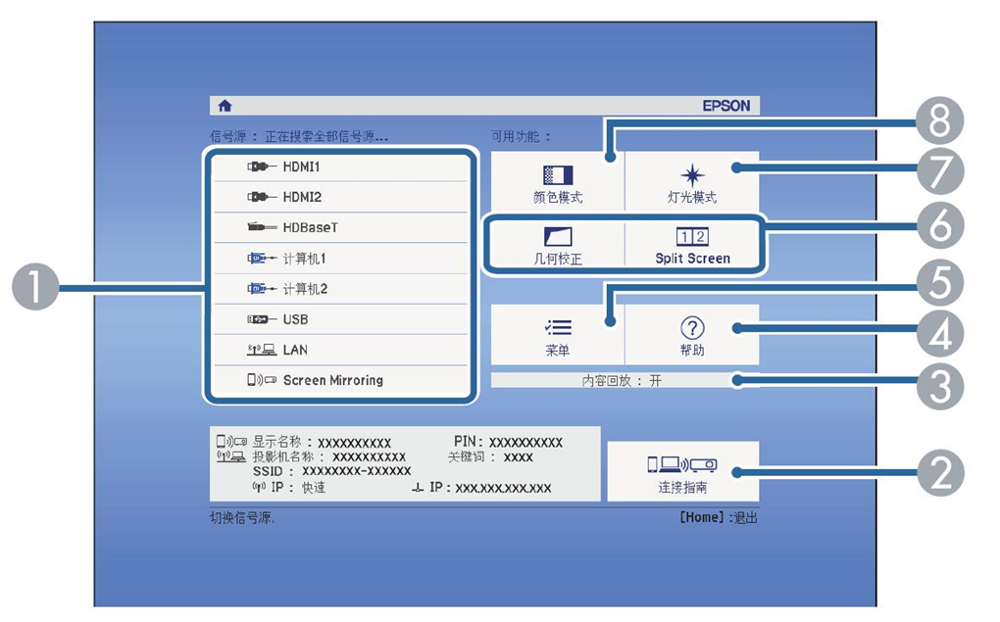选择投影源。
显示连接指南。您可以根据所使用的设备（如智能手机或计算机）选择无线连接方法。
表示投影机处于内容回放模式。
显示帮助屏幕。
显示投影机的菜单。
执行投影机扩扩展设置菜单中分配给主主屏幕的菜单选项。
选择灯光亮度。
更改投影机的颜色模式。
- 注意：
若闲置时间超过10分钟，主屏幕会消失。
4.2. 关闭投影机¶
本功能用于使用投影机后。
- 注意：
不使用时关闭产品以延长投影机的寿命。灯光使用寿命取决于所选模式、环境条件和使用情况。亮度会逐渐降低。
关闭投影机时自动灯光位置校准会定期启动。
但在以下情况下自动启动：
在恒定模式模式下连续使用投影机超过24小时
通过切断电源插座（直接关机）定期关闭投影机
在投影机扩扩展设置菜单中计划定期灯灯光位置校准事件。
操作步骤：扩展设置>进入日程设置
投影机支持直接关机功能，可以直接使用开关将其关闭。
关闭投影机操作步骤：
- 按控制面板或遥控器上的电源按钮。
投影机显示关闭确认屏幕。
- 再按一下电源按钮。要保持开启，请按任何其他按钮。
投影机会发出两次嘟嘟声，灯光关闭，状态指示灯变熄灭。
要运输或存储投影机，请确保电源指示灯为蓝色 （但不闪烁），然后拔下电源线插头。
4.3. 选择投影机菜单语言¶
如果想要用其他语言查看投影机的菜单和信息，您可以更改语语言设定。
操作步骤：
打开投影机。
按控制面板或遥控器上的**[Menu]**按钮。
选择**扩展设置菜单**，然后按**[Enter]**。
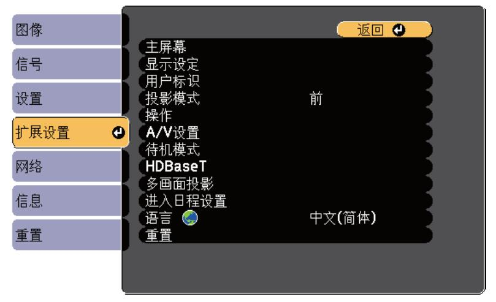选择**语言设定**，然后按**[Enter]**。
选择想要使用的语言，然后按 [Enter]。
按**[Menu]**或**[Esc]**退出菜单。
4.4. 投影模式¶
根据投影机放置的方式，可能需要更改投影模式，以便正确投影图像。
前（默认设定）可从屏幕前方的桌面上投影。
前投/吊顶会将图像上下翻转，从吊顶或墙上固定架倒置投影。
背投水平翻转图像，从半透明屏幕后面投影。
背投/吊顶上下和水平翻转图像，从吊顶或墙上固定架和半透明屏幕后面投影。
4.5. 设定屏幕类型¶
您可以使用屏幕类型设置将所显示图像的长宽比与所使用的屏幕匹配。
- 注意： 使用以下一个输入源时此设定不可用：
USB
LAN
操作步骤：
打开投影机并显示一个图像。
按控制面板或遥控器上的[Menu]按钮。
选择扩扩展设置菜单，然后按[Enter]。
- 选择显示设定 >屏幕 >屏幕类型。
您会看到此屏幕：
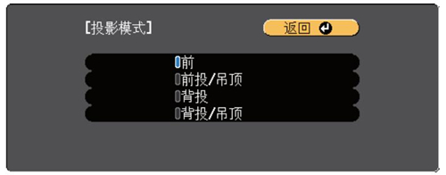
选择屏幕的长宽比并按 [Enter]。
按[Menu]退出菜单。
必要时调节投影图像的长宽比。
4.5.1. 使用屏幕位置调节图像位置¶
如果图像边缘和投影屏幕框之间有空白，您可以调节图像位置。
- 注意：
如果屏幕类型设置对于WXGA/WUXGA投影机型号设定为16：10，对于XGA投影机型号设定为4:3，则您不能调节屏幕位置。
- 操作步骤：
打开投影仪并显示一个图像。
按控制面板或遥控器上的[Menu]按钮。
选择扩展设置菜单，然后按[Enter]。
选择显示设定>屏幕>屏幕位置。
使用操作面板或遥控器上的箭头按钮调节图像位置。
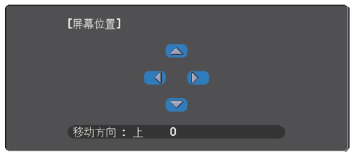完成后，按[Menu]。
4.6. 调节图像高度¶
如果从桌面或其他平面上投影，图像太高或太低，您可以使用投影机的 可调撑脚调节图像高度。
倾斜的角度越大，聚焦越难。安装投影机时使其只需倾斜很小的角度。
操作步骤：
打开投影机并显示一个图像。
要调节图像高度，请旋转前撑脚以展开或缩回。
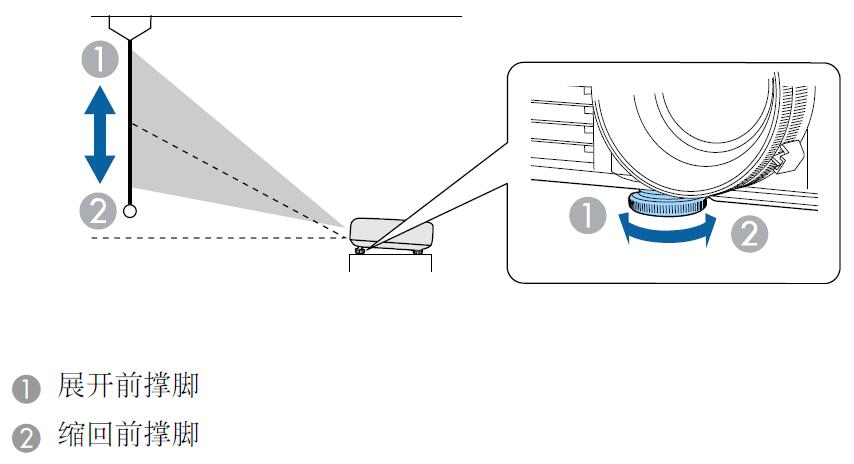如果图像倾斜，请旋转后撑脚以调节其高度。
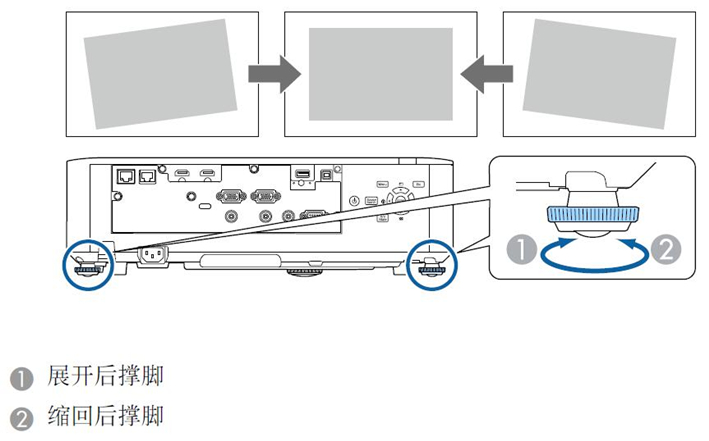
4.7. 使用菜单更改投影模式¶
您可以使用投影机菜单更改投影模式将图像上下和或左右翻转。
操作步骤：
打开投影机并显示一个图像。
按控制面板或遥控器上的[Menu]按钮。
选择扩扩展设置菜单，然后按[Enter]。
选择投影模式，然后按[Enter]。
选择一个投影模式，然后按[Enter]。
按[Menu]或[Esc]退出菜单。
4.8. 图像长宽比¶
以不同的长宽比显示图像。通常，视频源的输入信号确定图像的长宽比。但是，您可以更改特定图像的长宽比以适合自己的屏幕。
4.8.1. 更改图像长宽比¶
您可以更改所显示图像的长宽比
注意：
更改长宽比之前，在投影机 扩展设置 菜单中设定 屏幕类型
扩展设置 > 显示设定 > 屏幕 > 屏幕类型,仅在**比例模式**设置为**全屏显示**时，此设定可用
信号 > 比例 > 比例模式
打开投影机并切换至想要使用的图像源
按遥控器上的[Aspect]按钮
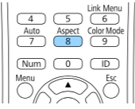显示图像的形状和尺寸会改变，长宽比名称短暂出现在屏幕上。
要循环选择适合您输入信号的长宽比，请重复按[Aspect]按钮
注意：
要显示不带黑条的图像，请根据计算机的分辨率在信号中将 输入分辨率 设为宽屏或正常。
4.8.2. 可用的图像长宽比¶
您可以根据所选的屏幕类型设置和图像源中的输入信号，选择以下图像长宽比。
注意：
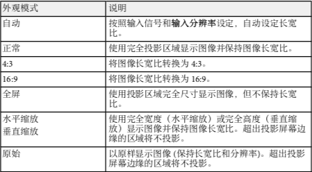
可用长宽比设定取决于输入信号。
请注意，根据版权法，处于商业用途使用投影机的长宽比功能缩小、放大或分割投影的图像可能侵犯该图像版权持有人的版权。
4.9. 颜色模式¶
投影机提供不同的颜色模式以针对各种观看环境和图像类型提供最佳亮度、对比度和颜色。您可以选择专为满足您图像和环境而设计的模式，或体验可用的模式。
4.9.1. 更改颜色模式¶
您可以使用遥控器更改投影机的颜色模式以针对观看环境优化图像
打开投影机并切换至想要使用的图像源
按遥控器上的[Color Mode]按钮以更改颜色模式。
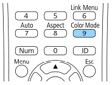颜色模式短暂出现在屏幕上，之后图像外观会改变。
要循环选择适合您输入信号的所有可用颜色模式，请重复按[Color Mode]按钮
注意：
您也可以在投影机的 图像 菜单设定颜色模式
4.9.2. 可用颜色模式¶
根据所使用的输入源，您可以设定投影机使用这些颜色模式：
颜色模式 |
说明 |
|---|---|
动态 |
这是最明亮的模式。最适合亮度优先。 |
上演 |
最适合投影鲜明图像 |
影院 |
最适合看电影等 |
sRGB |
最忠实再现源图像的颜色 |
DICOM SIM |
最适合投影 X 光照片和其他医学图像。此模式仅供参考，不用于医病诊断 |
多画面投影 |
最适合从多台投影机进行投影（减小图像之间的色调差异） |
4.9.3. 打开亮度自动调整¶
打开动态对比度自动优化图像亮度。这会根据所投影内容的亮度提升图像对比度。
此设置适用于动态或影院颜色模式：
打开投影机并切换至想要使用的图像源。
按控制面板或遥控器上的[Menu]按钮。
选择图像菜单，然后按[Enter]。
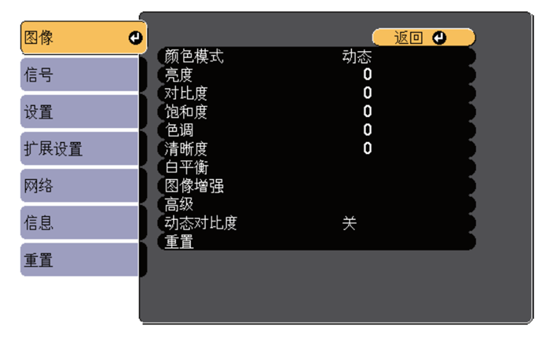选择动态对比度，然后按[Enter]。
选择以下一个选项，然后按[Enter]。
正常 适用于标准亮度调节
高速 随场景变化即时调节亮度
按[Menu]或[Esc]退出菜单。
4.10. 调节图像颜色¶
您可以全方位微调投影图像中颜色的显示方式。
4.10.1. 调节色相、饱和度和亮度¶
您可以调节个别图像颜色的色相、饱和度和亮度设置。
打开投影机并切换至想要使用的图像源。
按控制面板或遥控器上的[Menu]按钮。
选择图像菜单，然后按[Enter] 。
选择高级，然后按[Enter]。
选择 RGBCMY，然后按[Enter]。
选择要调节的颜色，然后按[Enter]。
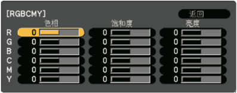- 根据需要对以下各项进行设置
要调节颜色的整体色相，偏蓝偏绿偏红，请调节色相设置。
要调节颜色的整体鲜艳度，请调节饱和度设置。
要调节颜色的整体鲜艳度，请调节亮度设置。
按[Menu]或[Esc]退出菜单。
4.11. 调节亮度¶
您可以调节投影机灯光的亮度
打开投影机并切换至想要使用的图像源。
按控制面板或遥控器上的[Menu]按钮。
选择 设置 菜单，然后按[Enter] 。
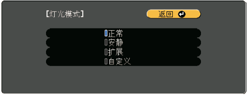选择亮度设置，然后按[Enter]。
选择灯光模式，然后按[Enter]。
选择下面一个选项：
正常 可将亮度设为最大。这使灯光预期使用寿命约为 20,000 小时。
安静 可将亮度设为 70% 和降低风扇噪音。这使灯光预期使用寿命约为 20,000 小时。
扩展 可将亮度设为 70% 并延长灯光的预期寿命。这使灯光预期使用寿命约为 30,000 小时。
自定义 可在 70% 到 100% 之间选择自定义亮度。
如果选择自定义，请从亮度设置屏幕选择 亮度级别 ，然后使用向左和向右箭头选择亮度。
要保持亮度一致，请打开 恒定模式 设定。
注意：
如果打开 恒定模式 ，您不能更改 灯光模式 和 亮度级别 设定。
如果打开 恒定模式 ，亮度级别 设定会根据灯光状态而更改。
按 [Menu] 或 [Esc] 退出菜单。
注意： 以下情况下，在投影机 扩展设置 菜单中计划定期 灯光位置校准 事件：
在恒定模式模式下连续使用投影机超过 24 小时
通过切断电源插座定期关闭投影机
否则，恒定模式 设定可能无法正常工作。
4.12. 用音量按钮控制音量¶
音量按钮控制投影机的内部扬声器系统。
您也可以控制连接到投影机的外部扬声器的音量。
您必须针对每个连接的输入源分别调节音量。
打开投影机并启动演示.
要降低或升高音量，请按所示的遥控器上的[Volume]按钮。
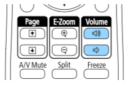音量表出现在屏幕上。
3.要给输入源的特定级别设定音量，请在投影机的 设置 菜单中选择 音量。
注意：
请勿以高音量设定开始演示。突然的高频噪音会对听力造成损害。
在关机之前务必降低音量，以便开机后逐渐增大音量。